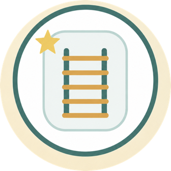

Our documents
Privacy Policy
This policy covers Flag Ladder, Math Ladder, English Ladder, and The Confused Robot on iPhone, iPad, and Apple TV, and our beta website.
Last updated: October 26, 2026
Information inside the apps
The games contain no advertising, advertising tracking, or behavioral analytics. Information is not sold. Basic gameplay and purchases do not require a shared parent account. In versions that support it, a parent may choose to sign in, before or after a purchase, to link bundle access across apps; availability depends on the app version and testing environment. A purchase made without signing in unlocks the app where it was made. If a parent signs in later, Apple's signed purchase proof is linked once, to the first parent account that presents it.
Shared parent account
Sign in with Apple is used without requesting your name or email from Apple. The account server stores an internal account identifier, a hash of the sign-in identifier, authentication and session tokens, and purchase entitlement records. Apple's refresh token is encrypted to support sign-out and account deletion. Your Apple password never reaches us.
Cloudflare Workers and D1 host the account service and its data. Qonversion receives a technical account identifier and information needed to verify purchases: transaction and product identifiers, purchase and expiry dates, subscription status, and price and currency when available. These are used for verification, restoration, and cross-app entitlement synchronization, not advertising. Gameplay progress and children's achievements are not sent to the account service. Providers may process data outside your country; see the Cloudflare Privacy Policy and Qonversion Privacy Policy.
Website and beta waitlist
The static website does not use user accounts or advertising cookies.
On game and download pages we use PostHog Cloud EU to count page views and App Store clicks by game, page language and an approved campaign tag. A click does not confirm an installation. Measurement uses no cookies, cross-page or returning-visitor identification, session recordings or device fingerprinting. A temporary random ID joins only one page load to its clicks; reloading creates a new ID. We do not collect names, emails, form contents, full page URLs or individual advertising click IDs. The service receives network information to communicate; the project is configured to discard IP addresses from events, with location enrichment disabled. Do Not Track and Global Privacy Control disable measurement. Beta, privacy and terms pages are not measured. This does not change data collection in our apps or classroom sites. Provider processing and retention are described in the PostHog Privacy Policy.
To select the site language, a short request goes to our Cloudflare server: Israel selects Hebrew and other countries select English. It returns only a language, without saving location in our database or sending it to analytics. Cloudflare receives network information required for communication. We do not request precise device location. A manual language choice takes priority and is saved in your browser; when country detection is unavailable, browser language is used. VPNs or intermediary networks can affect country detection.
When you submit the beta form, it collects your first and last name, Apple Account email address, selected games and platforms, optional testing background, optional note, form language, and consent timestamp.
The form uses Cloudflare Turnstile to reduce automated and fraudulent registrations. For this security check, Cloudflare may process technical information such as an IP address, browser characteristics, and challenge data under the Cloudflare Privacy Policy. The developer does not store IP addresses in the waitlist database.
Registration details are sent over an encrypted connection, and identifying fields are encrypted before storage. The information is used only to manage and manually review the waitlist, prepare TestFlight tester lists, communicate with testers, and address feedback. It is not sold or used for targeted advertising.
Progress and settings
Progress, settings, and character selection are stored on the device. When iCloud is available, this data may synchronize through Apple's iCloud service between devices signed in to the same Apple Account. The developer does not operate a server that receives this data and cannot access it.
Apple services
iCloud, Game Center, the App Store, and TestFlight are Apple services. The apps use them for progress synchronization, achievements, purchases, and beta testing according to the user's choices. Apple's handling of information is governed by the Apple Privacy Policy.
Purchases and subscriptions
Apple processes purchases and payments through the App Store. The developer does not receive card numbers or passwords. Apple provides signed transaction and entitlement information. When you use the shared account, the account server and Qonversion also verify this information. Prices and currencies follow your account's App Store storefront; GPS location is not required.
Children
The shared account, purchases, and beta registration are for a parent or adult. The apps do not ask children for names, email addresses, locations, or photos and do not include chat. Do not include children's personal information in beta forms or support messages. Remove unnecessary personal information before sending screenshots or recordings.
Retention and deletion
Account and purchase-link records are retained while the account exists to support sign-in, restoration, and access. Request deletion in the parent-account screen or contact support. Deletion revokes sign-in authorization and removes the account and its links from our server and Qonversion. Temporary sessions are removed after expiry. Time-limited security records help prevent abuse.
Removing an app alone does not delete the parent account. Account deletion does not cancel an Apple subscription or erase Apple's purchase history. Cancel subscriptions separately in Apple's subscription settings. iCloud data and Game Center achievements are managed through Apple's services.
Beta registration has a separate retention period: the encrypted edge copy is deleted within 30 days after secure synchronization to the local management system, or no later than 12 months after registration. The local record is retained only while needed to manage the beta round, send invitations, and follow up on feedback, and for no more than 12 months after the latest activity unless retention is legally required. You may ask at any time to remove your registration details or stop further contact.
Privacy requests
For questions, deletion requests, or beta opt-out requests, email support.laddergames@gmail.com.